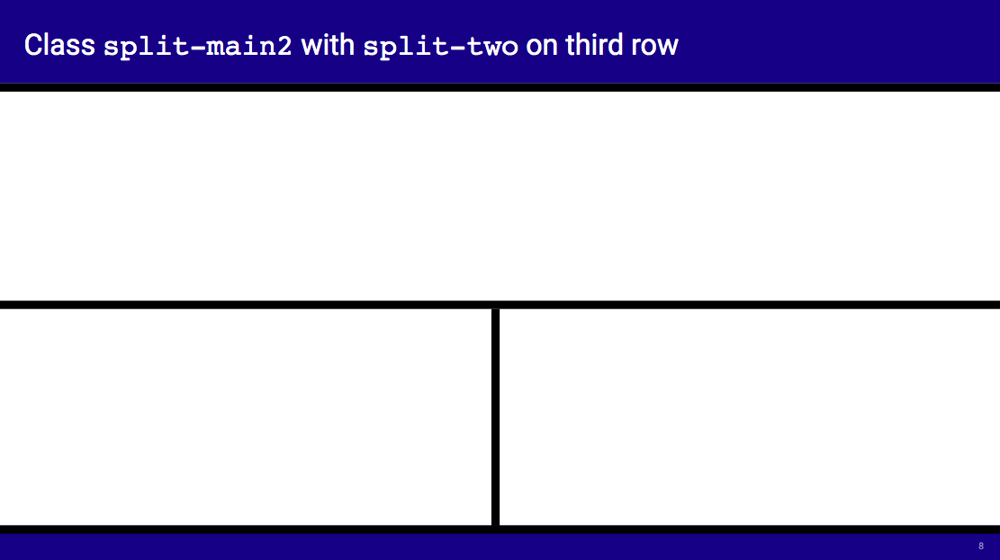

.split-1-2-1>.column:first-of-type {
width: 25%; height: 100%; position: absolute; top: 0; left: 0;
}
.split-1-2-1>.column:nth-of-type(2) {
width: 50%; height: 100%; position: absolute; top: 0; left: 25%;
}
.split-1-2-1>.column:nth-of-type(3) {
width: 25%; height: 100%; position: absolute; top: 0; right: 0;
}
tl;dr
Emi Tanaka’s Ninjutsu CSS for {xaringan} breaks slides into ‘cells’, which are useful for arranging plots, tables, etc. I’ve been experimenting with Emi’s CSS to create my own layouts.
Slide themes
The {xaringan} package by Yihui Xie – an implementation of remark.js – lets you create reproducible slides with R.
You can create your own themes for {xaringan} by supplying some CSS. Yihui has encouraged users to add their themes to the package itself.
Tip: if you don’t know CSS, Garrick Aden-Buie’s {xaringanthemer} package lets you write R code and will generate the corresponding CSS for you.
Slide layouts
I was given a brief to create slides with a particular layout of page elements (plots, tables, text). How could I create a ‘scaffold’ in {xaringan} into which I could place the page elements?
Fortunately, Emi Tanaka1 created Ninjutsu2: CSS classes for splitting your page into columns and rows. This is now built into {xaringan} along with her Kunoichi theme3.
For example, the split-1-2-1 class from Ninjutsu splits the slide into three columns that are 25%, 50% and 25% of the total page width (hence ‘1-2-1’).
There’s one line of CSS for each of the three columns that the slide will be split into. In this example, the first column (first-of-type) starts from the extreme left (left: 0;), the middle column (nth-of-type(2)) starts where the first one ends (left: 25%;) and the third one (nth-of-type(3)) starts from the extreme right (right: 0;).
Demo: ninja scaffold
I adapted Emi’s CSS to create the layouts I wanted. You can:
- find the source on GitHub
- inspect the relevant custom CSS
- see a demo slideshow, or view it embedded below
Read the rest of this post for an explanation of how I did it.
Adapting the layout
Specifically, I wanted to define title, body and footer-bar sections for:
- a title page
- a main, generic content page
- a content page that could show a table and plot next to each other, with a wider table underneath
This means I could colour them and/or fill them with content according to some additional CSS formatting.
To do this, I tweaked Emi’s split-1-2-1 class to create classes with rows (rather than columns) split into the sections I wanted.
Below are some simplified examples of what I did. You can see the original CSS in the source code of the demo I’ve put on GitHub.
Defining the classes
The title page has two rows, one is a large header area to hold a logo and the other is where the talk metadata goes (see demo):
.split-title>.row:first-of-type {
height: 35%; width: 100%; position: absolute; top: 0; left: 0;
}
.split-title>.row:nth-of-type(2) {
height: 65%; width: 100%; position: absolute; left: 0; top: 35%;
}The main slide class has a title and footer section and the content goes in the large section between (see demo):
.split-main1>.row:first-of-type {
height: 15%; width: 100%; position: absolute; top: 0; left: 0;
}
.split-main1>.row:nth-of-type(2) {
height: 80%; width: 100%; position: absolute; left: 0; bottom: 5%;
}
.split-main1>.row:nth-of-type(3) {
height: 5%; width: 100%; position: absolute; bottom: 0; left: 0;
}I modified slightly this class so the large blank area is split once more (see demo):
.split-main2>.row:first-of-type {
height: 15%; width: 100%; position: absolute; top: 0; left: 0;
}
.split-main2>.row:nth-of-type(2) {
height: 40%; width: 100%; position: absolute; left: 0; top: 15%;
}
.split-main2>.row:nth-of-type(3) {
height: 40%; width: 100%; position: absolute; left: 0; bottom: 5%;
}
.split-main2>.row:nth-of-type(4) {
height: 5%; width: 100%; position: absolute; bottom: 0; left: 0;
}Using the classes
Having defined the CSS, how do we use it?
Let’s say I’d saved this CSS into a file called custom.CSS, along with some font specifications in custom-fonts.CSS. Here’s a simplified YAML header showing how to declare these CSS files in your {xaringan} .Rmd file:
---
title: "Example Title"
output:
xaringan::moon_reader:
css: [default, ninjutsu, custom.css, custom-fonts.css]
---The CSS files are listed in this order so that the later-listed files take precedence if there’s any clashes. Remember also that in-built themes don’t need the .css file extension, but you need to provide the full path for any custom CSS.
With {xaringan} you name the class at the top of a slide to actually apply it, where slides are defined by three hyphens ---.
You can see an example in the source code of the demo I put on GitHub.
Class split-main1
So, the split-main1 could be used like this:
---
class: split-main1
.row[.content[
This Is A Title
]]
.row[.content[
This is the main body area of the slide.
]]Remember that the split-main1 class is split into three separate rows for the title, main body and footer sections. We can define what’s in each row with .row[] and then define the content inside a call to .content[].
The first .row[] call will take the style from .split-main1>.row:first-of-type in our CSS, the second will take the CSS information from .split-main1>.row:nth-of-type(2), and so on.
Note that Ninjutsu also lets you adjust the content of classes by chaining calls like .content.vmiddle[], which will make the content vertically centred in this case.
Class split-main2
The split-main2 class has an additional .row[] to define because the main body area is composed of two rows rather than one.
Here I’ve added a split-two[] call inside the second .row[] call and declared .column[] twice within it. This results the main body area containing one row the width of the page and one row split into two columns (see demo).
---
class: split-main2
.row[.content[
This Is A Title
]]
.row[.content[
This is the second row of the page. It's full-width.
]]
.row[.content[
.split-two[
.column[.content[
This is the third row, which is split in two. This is the left column.
]]
.column[.content[
This is the right-hand column of the third row.
]]
]
]]
.row[
]What now?
I think there’s a lot of promise in this approach for making bespoke page layouts.
I’ve already used this approach at work to design a {xaringan} template to a specification, which I used to help automate the generation of a large number of reports. In particular, I used the split-main2 class to arrange a small table in the top-left, a plot in the top-right, and a full-width wide table below them.
It’s possible to create these kinds of layouts in other ways – like in {pagedown} or with fancier CSS skills. For now I’m most comfortable with {xaringan} and the features it offers, like presenter notes and presenter view. But this is probably less important if your goal is to output to PDF.
I look forward to seeing how Ninjutsu and other {xaringan} themes develop to help with page layouts for reproducible presentations.
Environment
Session info
Last rendered: 2023-07-22 15:54:05 BSTR version 4.3.1 (2023-06-16)
Platform: aarch64-apple-darwin20 (64-bit)
Running under: macOS Ventura 13.2.1
Matrix products: default
BLAS: /Library/Frameworks/R.framework/Versions/4.3-arm64/Resources/lib/libRblas.0.dylib
LAPACK: /Library/Frameworks/R.framework/Versions/4.3-arm64/Resources/lib/libRlapack.dylib; LAPACK version 3.11.0
locale:
[1] en_US.UTF-8/en_US.UTF-8/en_US.UTF-8/C/en_US.UTF-8/en_US.UTF-8
time zone: Europe/London
tzcode source: internal
attached base packages:
[1] stats graphics grDevices utils datasets methods base
loaded via a namespace (and not attached):
[1] htmlwidgets_1.6.2 compiler_4.3.1 fastmap_1.1.1
[4] cli_3.6.1 tools_4.3.1 htmltools_0.5.5
[7] xaringanExtra_0.7.0 rstudioapi_0.15.0 yaml_2.3.7
[10] rmarkdown_2.23 knitr_1.43.1 jsonlite_1.8.7
[13] xfun_0.39 digest_0.6.33 rlang_1.1.1
[16] evaluate_0.21 Footnotes
Reuse
CC BY-NC-SA 4.0